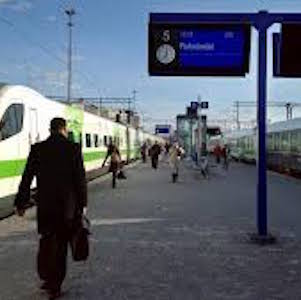
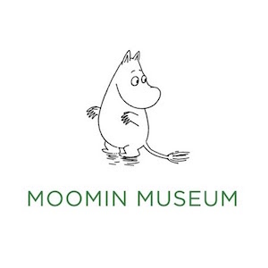
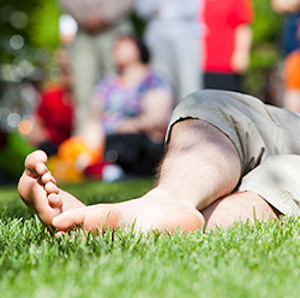
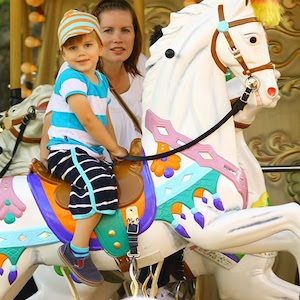
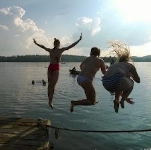

WHAT'S ON IN TAMPERE
Christmas market at the Stable yards

Tampere is celebrating 100 years of Finnish Independence on December 6th. Come and join in!
READ MORE
Christmas market at the Stable yards
You can enjoy the Christmas spirit in Tampere even before the actual holiday
Tampere is easy to reach - by bus,train, or domestic and international flights!
World's only Moomin Museum is open at Tampere Hall
Our summer video will make you want to book your trip to Tampere right here and now.
Check out what's happening in Tampere during your visit from our Events Calendar!
From Locals With Love,Fun For Kids, City Guide to Tampere. Download or print out.
Our new map helps you plan your holiday while keeping the little ones entertained.
Quaranteed good spots loved by locals. Find your Favorite!

Serene lakes await you just a stone throw away from the Tampere city centre.
Prefer the oldest public sauna still in use, or a chance to dip into a lake year-round?
From Lenin Museum to world-renowned art museums, Tampere caters to all interests